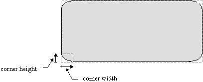

|
| |
You can draw a rounded rectangle using DrawRoundRect().
The dimensions of each corner (corner size and corner height) are given by a
TSize argument.

Rounded rectangle construction
...
// draw a rectangle with rounded corners, centered in the rectangle
TSize cornerSize(20,20); // set up the size of a rounded cornerSize
gc.DrawRoundRect(box,cornerSize);
...
In the following example code, one of the ellipses specified by the corner argument is shown, to illustrate how the rounded rectangle is constructed:
...
// draw a rectangle with rounded corners,
//centered in the rectangle, showing a corner ellipse
TSize cornerSize(20,20); // size of a rounded corner
// rect for corner ellipse is twice the corner size
TSize cornerEllipseSize(cornerSize.iHeight*2,cornerSize.iWidth*2);
TRect cornerRectTl(box.iTl,cornerEllipseSize);
gc.DrawRoundRect(box,cornerSize);
gc.SetPenStyle(CGraphicsContext::EDottedPen);
gc.DrawEllipse(cornerRectTl); // corner construction ellipse
...
Copyright ©2002 Symbian Ltd. 6.1-00174 |
|